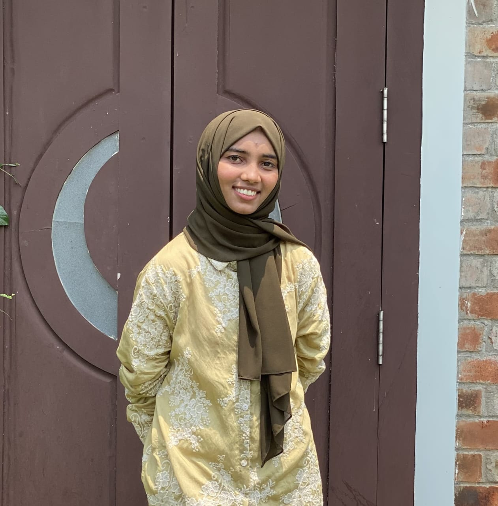

Passionate about learning technology, exploring innovative ideas, and building meaningful digital solutions. Curious, creative, and always eager to grow through continuous learning.
Explore PortfolioI am Shabna C, a Physics graduate from PSMO College (2026). My academic journey has strengthened my analytical thinking, problem-solving abilities, and curiosity about how things work. Beyond academics, I have a growing interest in technology, software development, and creative digital projects.
I enjoy exploring new tools, learning modern technologies, and turning ideas into practical solutions. I believe continuous learning and adaptability are key to personal and professional growth.
A concept application designed to help users track buses, access route information, and improve transportation convenience.
A platform idea connecting people with skilled workers and service providers in their local area.
A health-focused application concept aimed at supporting mothers through pregnancy tracking and useful insights.
PSMO College
Graduated in 2026
📧 shabnamshabna44@gmail.com
💻 github.com/shabna421
📍 Kerala, India